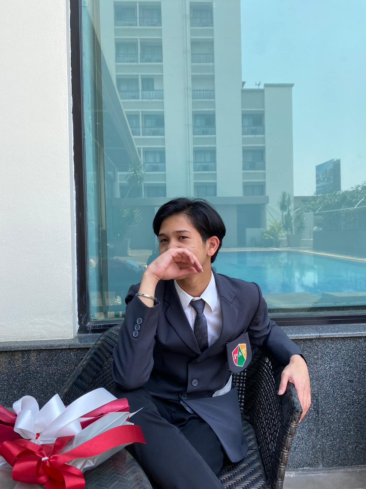

ชื่อเล่น: พีพี
สาขาวิชา: DIT: เทคโนโลยีสารสนเทศ
กลุ่มเรียน: G1
ทักษะใหม่ไม่ว่าจะเป็นการสร้างหรือออกแบบ Appication การเขียน Code ออกแบบโดยใช้ทั้ง Front-end และ Back-end ไปพัฒนา
ผมคาดหวังว่าต้องมีความรู้ที่สามารถนำไปใช้ทำงานได้จริงทั้งตอนฝึกงานละตอนที่ลงมือทำงานกับบริษัทได้จริง
จุดอ่อนของผมคือการที่ผมนั้นไม่สามารถรับข้อมูลความรู้ต่างๆเข้ามาพร้อมกันได้ จึงทำให้ตัวเองนั้นพัฒนาทุกด้านได้ช้ามากกว่าการเรียนรู้ด้านใดด้านหนึ่ง แนวทางการพัฒนาคือพยายามมากขึ้นเพื่อที่จะเรียนรู้และแก้ไขปัญหาต่างๆที่ไม่เข้าใจ
เว็บไซต์ที่ผมชื่นชอบคือ youtube เพราะเป็นแหล่งรวบรวมข้อมูล ทั้งในด้านความรู้ การสร้างรายได้ และสร้างความบันเทิง